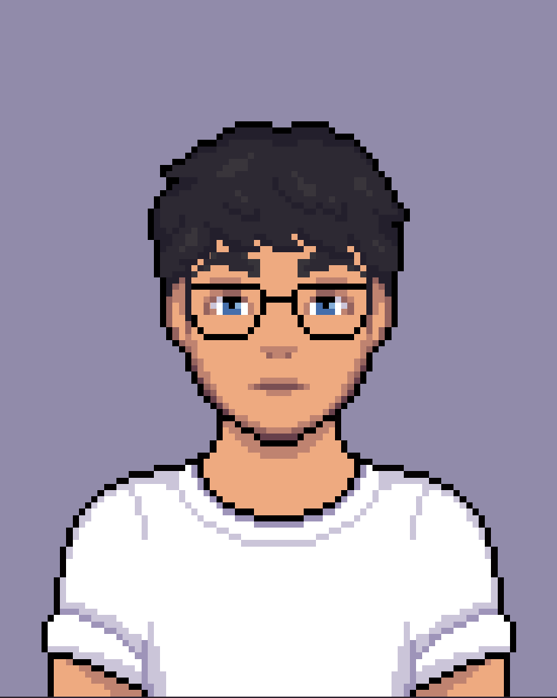

Cemal Mert Çelik
Bilgisayar Mühendisi
Karabük Üniversitesi Bilgisayar Mühendisliği bölümünden Ocak 2025'te mezun oldum. Siber güvenlik, uygulama
geliştirme, ağ sistemleri, mobil geliştirme, görsel programlama ve donanım gibi farklı alanlara ilgi duyuyorum.
Güncel olarak .NET, C#, GO teknolojileri ile projeler geliştiriyorum.
Takım çalışmasını, gelişimi ve yeni şeyler öğrenmeyi severim.
Projelerim
Cihaz Takip ve Yönetim Sistemi
Kullanılan cihazların anlık sistem durumlarını kontrol edebilecek,
ürünlerin yeni sürümlerinin cihazlara uzaktan kurulumlarını yapabilecek bir yapı tasarladım.
C#, Worker Service, gRPC ve Microsoft SQL Server gibi teknolojileri kullandım.
Otopark Yönetim Sistemi
Ufak çaplı işletmelere yönelik otopark yönetim sistemi geliştirdim. Araç giriş-çıkış takibi, abonelik yönetimi ve raporlama özellikleri bulunuyor.
C# ve Microsoft SQL Server kullandım.
Media Upload Sitesi
Kullanıcıların düğün, nişan benzeri organizasyonlarda insanlar tarafından çekilen fotoğraf ve videoları yükleyebilmeleri için bir web sitesi geliştirdim. Site için HTML, CSS ve JavaScript kullandım.
API tarafı için GO dilini tercih ettim. İşlemlerin kaydı için SQLite veritabanı kullandım.
Yapay Zeka Destekli Hareket Analizi Sistemi
Bitirme Projem olarak yapay zeka destekli hareket analizi sistemi geliştirdim. Projenin mobil tarafı için Flutter kullanarak donanımla etkileşimli bir uygulama geliştirdim.
Donanım tarafında ise yapay zeka modeli çalıştıran bir arduino tabanlı kart kullandım. Projede kullanılan modeli boksörlerin hareketlerini
inceleyerek ve yine bu projede bir araya getirdiğim donanımla verileri topladım ve verilerden modeli eğittim.